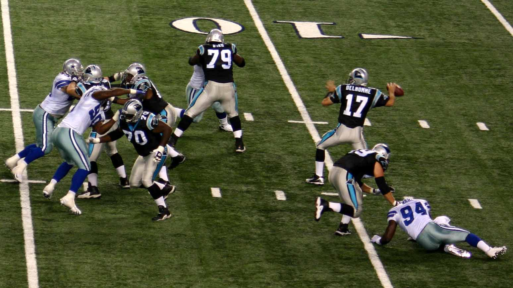
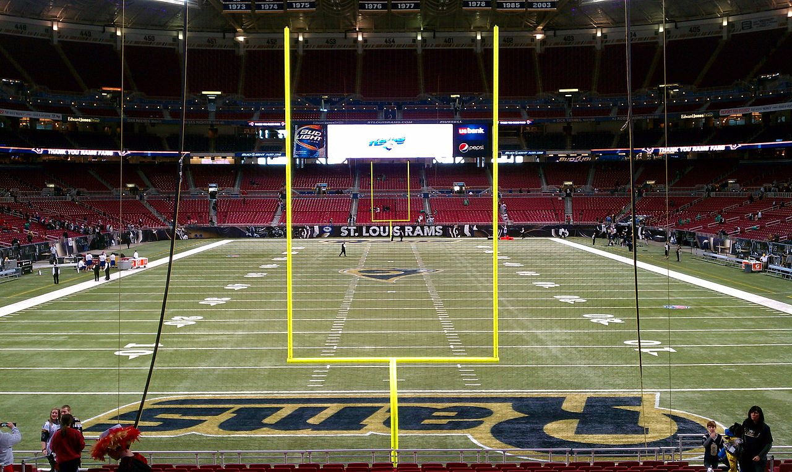

Normal play consists of two teams of
11 players on field (one on
offence the other on defence) competing during four
15 minute quarters.
There are usually
three ‘time-outs’ per half
for each team, with a 12 minutes half-time interval.
The purpose of the game is to move the ball into the
opposition's ‘end zone’,
either by running with the ball until tackled, or by passing
the ball to a teammate downfield, towards the end zone.
Although there are only 11 players from each side on the
field at any one time, a team is actually made up of
45 players. The
key player on each side is
the quarterback who attempts
to dictate play.
DOWNS
Downs are the part of the game which often needlessly
confuses newcomers. They are actually fairly
straightforward. In a nutshell, the rule is as follows:
The team in possession of the ball (offence) needs to move
the ball forward by at least
10 yards while they are on
offence. This is why the pitch has clearly
marked yardage lines on it.
They have four chances, or
downs, to gain those 10 yards and if they advance the ball
that far, the count
resets and the team earns
another set of four downs to try go a further
10 yards.
If the offensive team fails to move these 10 yards within
four downs, possession is
then given up and the defensive side gets their turn to
play offense. Teams will usually
kick for a field goal or
downfield to the defending team on the fourth down to try
and salvage some points before they lose possession.


SCORING
Touchdown (6 Points): A touchdown is scored when a
team crosses the
opposition's goal line with the ball, or
catches or collects the
ball in the end zone.
Field Goal (3 Points): A team will usually attempt
these on the fourth down -
if the kicker is close enough to the end zone to kick the
ball through between the
upright posts.
Extra Point (1 Or 2 Points): An extra point is
earned by kicking the ball
through the uprights after a touchdown (it’s similar to a
conversion in rugby).
Two points are earned by
taking the ball into the end zone again, but since it is
more difficult, most teams opt to take the 1pt.
Safety (2 Points)The defensive team can gain 2 pts
if they tackle a member of
the offensive team with the ball in their own end zone.